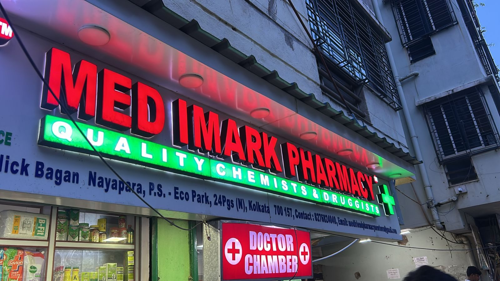

Pharmacy & Medicines
Medicines from our pharmacy, with friendly help from our team. Call us to check availability.
Pharmacy & Clinic in Noapara, Kolkata
Medimark provides medicines and healthcare support to our local community, with consultant doctors available right at our shop.

Care Under One Roof
Medicines, tests and doctor consultations at one address. Please call us to ask about availability and consultation timings.
Medicines from our pharmacy, with friendly help from our team. Call us to check availability.
Blood tests and laboratory investigations. Please call us for details.
ECG, EEG and NCV tests. Please call us for details.
Consult our doctors at the clinic beside the pharmacy.
Obstetrics and gynaecology consultations, including infertility and menopause care.
Paediatric consultations, including newborn (neonatal) care.
Consultations with a consultant physician.
Consultations for ear, nose and throat concerns.
Consultations with a consultant neuropsychiatrist.
Medimark Pharmacy
Medimark is a local pharmacy and clinic in Noapara. We want getting your medicines to be simple, and we want you to be treated with courtesy whenever you walk in.
Our team is happy to help you find what you need, and our doctors consult in the clinic beside the pharmacy.
Our Team
Please call us to ask about consultation days and timings.
Obstetrician & Gynaecologist
M.B.B.S., D.G.O., CIMP. Infertility expert, laparoscopic surgeon and IMS credentialed menopause practitioner.
Registration No. WB45742
Consultant Child Specialist
M.B.B.S., M.D. (Paed), MICP (USA). Neonatologist, fetal cardiologist and physician.
Consultant Physician
M.B.B.S. BLS & ACLS (American Heart Association), Certificate in Diabetes (American Diabetes Association), Hematology & Bone Marrow Transplant, CCPC (Palliative Care).
WBMC Reg. No. 75115
Consultant ENT (Ear, Nose, Throat) Specialist
M.B.B.S (WBUHS), M.S. ENT (WBUHS). WHO certified (Hearing). American College of Chest Physicians certified for sleep apnoea.
Consultant Neuropsychiatrist
M.B.B.S (Hons), M.D. (Psychiatry) (SSKM), MRCPsych I (UK). Member of the Indian Psychiatric Society.
Reg. No. 76243 (WBMC)
Find Us
Get Directions in Google Maps →
+91 6291 602 241+91 82768 23535+91 82768 24040